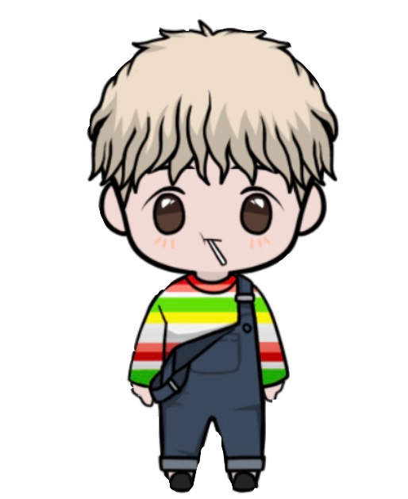

A
Bout
『可能性を広げたい！』
選択肢は無限大。自分で自分の道を狭めて出来ないと言い訳したくない。 今はただ、やりたい事・やるべき事をしっかり持つ事そして、 将来自分がやってきた事が無駄じゃなかったと周りに証明したい。 努力で”不可能”を”可能”にする！！！
Profile
久保田智之 kubota tomoyuki （25）
1996年（平成8年）1月17日に生まれ。広島県広島市出身。高校卒。 2013年には足場鳶、松下組に入社。その後松下組で共に働いていた 同級生が独立し、2015年に石丸興業とゆう会社を設立。それと同時に移籍。 そして、2020年12月に石丸興業を退職致しまして、現在エンジニアになる ため勉強中です。
『衝撃』
自分の中ですごく意味のある言葉だと思っています。 僕は、好奇心旺盛で思いついた事は何でも”やってみたい”と 思う性格で、世の中にはそんな人がたくさんいると思います。 物も、人の中にも周りに影響を与える事ができる、そんな人生で生きていく 中でこれからももっと衝撃を受けたい、自分も与えたい、そう思いました。 長い人生、鳥肌が立つくらいのあの感覚を世界に。
Home→